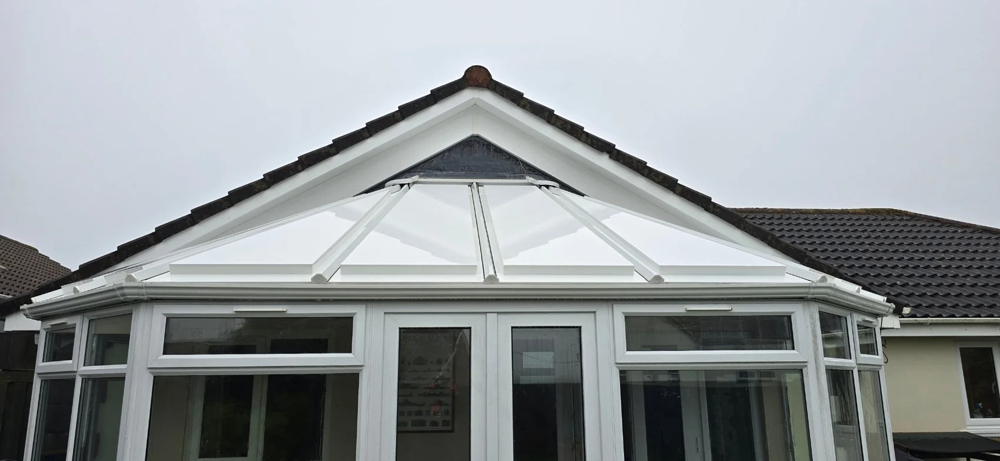

AWC WINDOW CLEANING · CAMELFORD
See the clean.
See the difference.
Real before-and-after photographs from our exterior cleaning projects.
BEFORE & AFTER
More light.
A cleaner outlook.
Compare the marked conservatory roof panels with the clean finish on the same property.
BEFORE & AFTER
Fresh from
top to bottom.
A close look at the guttering and soffits before cleaning, followed by the refreshed roofline.
BEFORE & AFTER
The same home.
A brighter exterior.
The stained render before cleaning and the fresh, even-looking finish afterwards.
BEFORE & AFTER
A conservatory
ready to enjoy.
See the change across the glass roof, frames and gutter line on this conservatory.
BEFORE & AFTER
A cleaner roofline.
A smarter welcome.
The supplied front views show the difference to the white gutters and exterior trims after cleaning.
OUR PROJECTS
The full project gallery.
Select a photograph to enlarge it.
YOUR CLEANING ENQUIRY
Let’s talk about your next clean.
Tell us what you have in mind. This form opens a WhatsApp draft with all your details, ready for you to review, add photos and send.